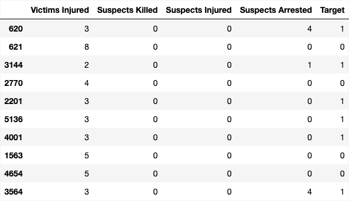
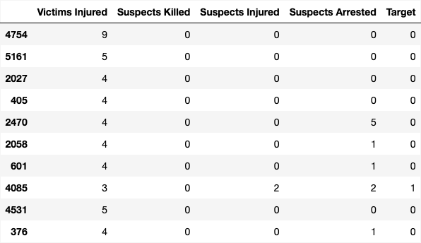
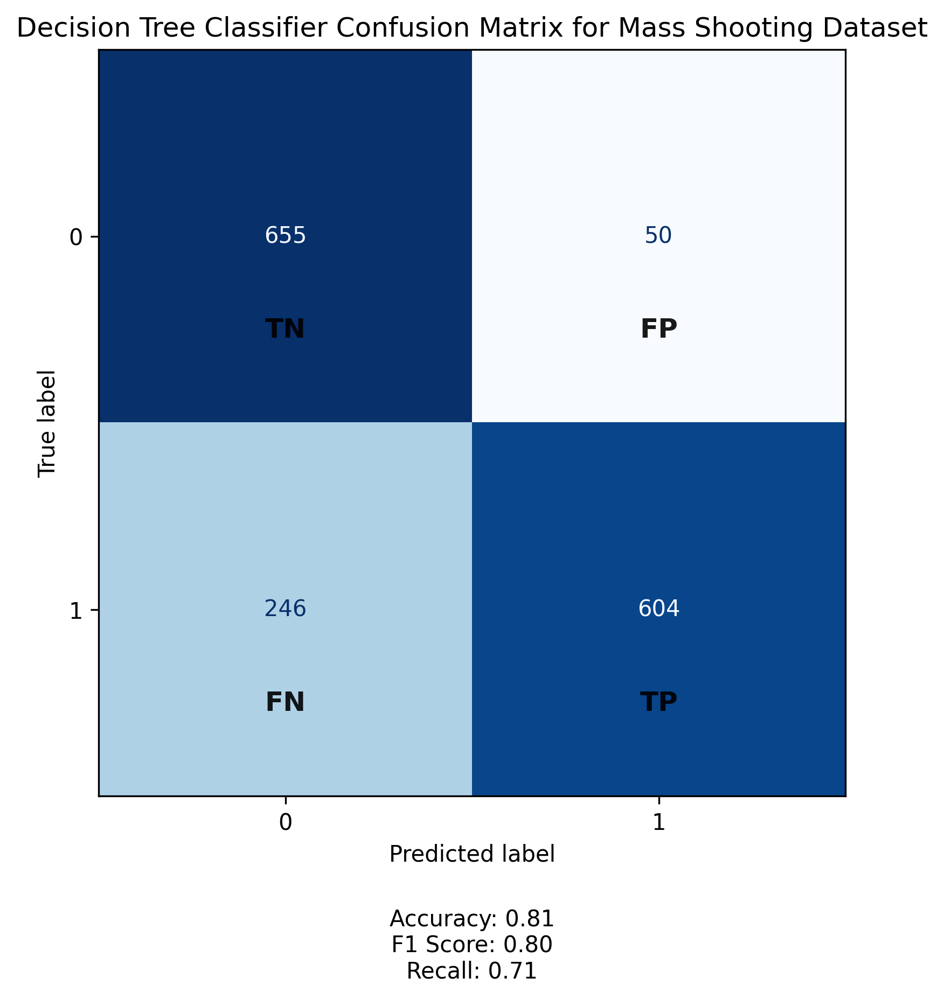
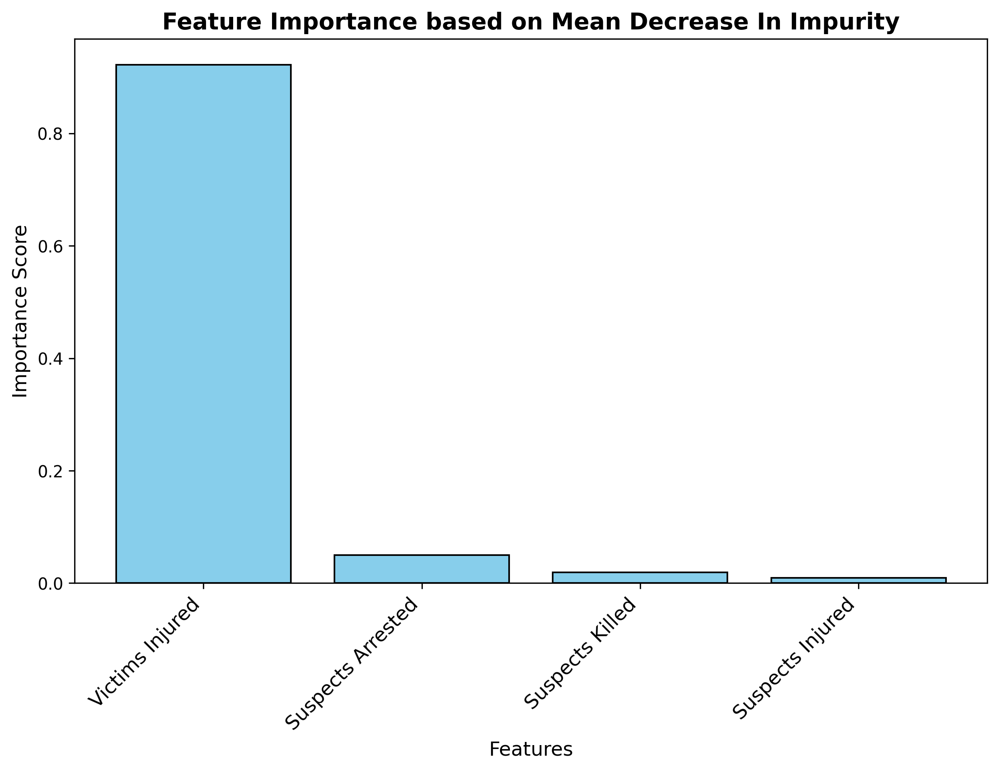
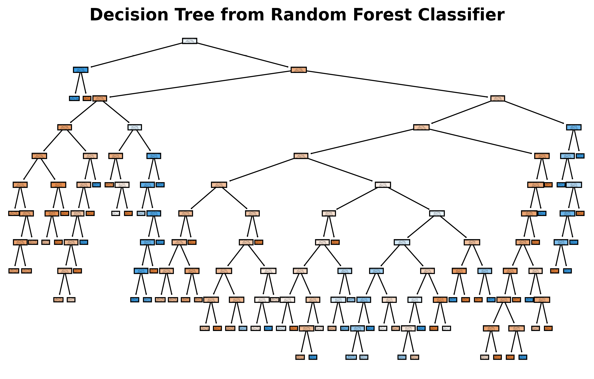
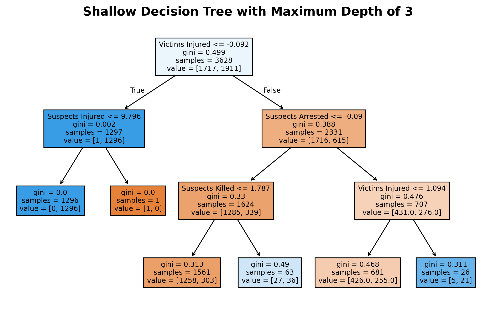
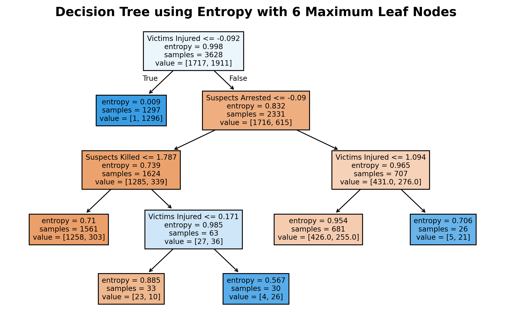
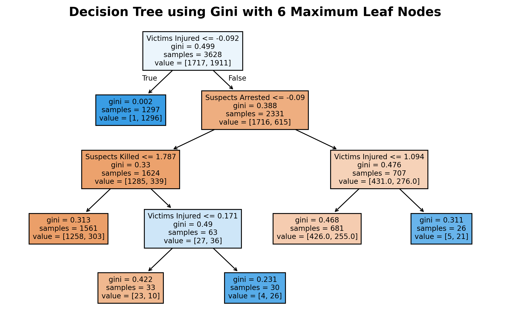

Mass Shootings

Training Data
Testing Data
Confusion Matrix
Feature Importance
Decision Tree using Random Forest
Shallow Decision Tree
Decision Tree using Entropy
Decision Tree using Gini
Conclusions
These decision tree visualizations reveal that “Victims Injured” is consistently the most influential feature in predicting the severity of an incident, as all models—Entropy, Gini with limited leaf nodes, and Gini with shallow depth—begin their splits with this variable. This suggests a strong correlation between injury count and fatal outcomes. Incidents with fewer injuries tend to result in fewer fatalities, while higher injury counts are associated with more severe consequences. Additional features like “Suspects Arrested” and “Suspects Killed” serve as secondary predictors, helping to further distinguish between outcomes and indicating that the suspects' involvement plays a role in the overall lethality of the event. The consistency across models points to stable patterns in the data, while the shallow tree emphasizes the most dominant relationships without overfitting. Altogether, these trees demonstrate that monitoring key variables such as victim injuries and suspect actions can help forecast the severity of future incidents and guide more informed decision-making in public safety contexts.